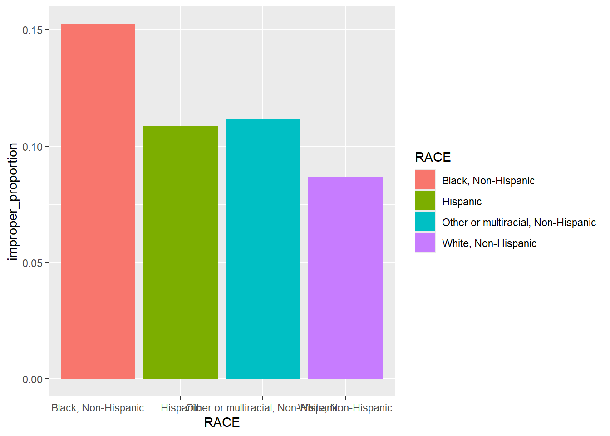
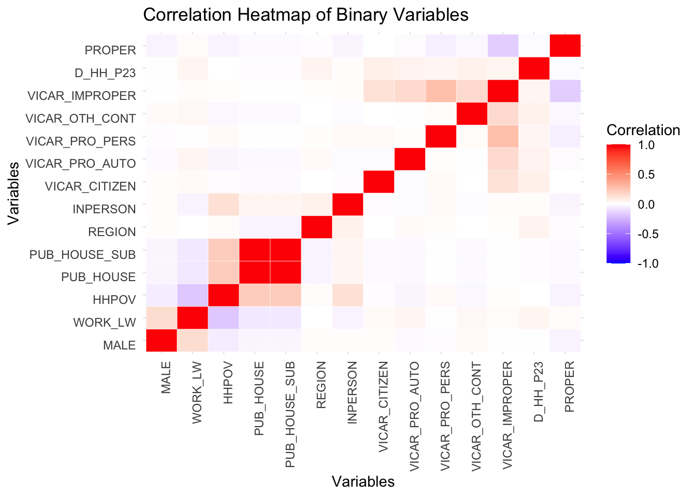
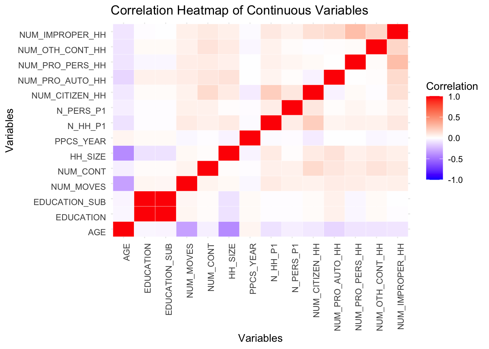

This week, we continued exploring the dataset with a focus on relationships among different variables such as reasons for traffic stops, arrests, and the types of police contacts experienced under different demographical groups.
For example, below is a plot being generated. We studied the disparities in experiences of improper police contact among different racial groups. We made a bar plot to illustrate the proportion within each racial group who reported experiencing improper police contact and the result reveals notable differences across racial groups.This insight lays the groundwork for deeper analysis to understand what factors contribute to these differences, potentially using demographic and situational variables in further modeling.
suppressPackageStartupMessages(library(tidyverse))suppressPackageStartupMessages(library(tidymodels))data <-readRDS("dataset/police_interaction.rds") data |>filter(!is.na(PROPER)) |>group_by(RACE) |>summarize(improper_proportion =sum(PROPER ==0) /n() ) |>ggplot(aes(x = RACE, y = improper_proportion, fill = RACE)) +geom_bar(stat ="identity")

This is the second plot that we would like to include here: We made a heatmap that visualizes the correlations between various binary variables in the dataset, where the color intensity represents the strength and direction of the correlation (with red indicating positive correlations and blue indicating negative correlations). There are notable positive correlations such as HHPOV and WORK_LW and notable negative correlations such as WORK_LW and any high-income indicator. This heatmap helps identify groups of binary variables that may be related or unrelated, which can be useful in modeling and to understand relationships among the data.
library(tidyverse)library(reshape2)
Attaching package: 'reshape2'
The following object is masked from 'package:tidyr':
smiths
# Categorizing variables based on their types#removed "CONTACT" and "ERROR" due to "Warning in cor(numeric_data, use = "complete.obs") : the standard deviation is zero" errorbinary_columns <-c("MALE", "WORK_LW", "HHPOV", "PUB_HOUSE", "PUB_HOUSE_SUB", "REGION", "INPERSON", "VICAR_CITIZEN", "VICAR_PRO_AUTO", "VICAR_PRO_PERS", "VICAR_OTH_CONT", "VICAR_IMPROPER", "D_HH_P23", "PROPER")ordinal_columns <-c("C4_RACE", "MAR_STAT", "FREQ_DRV", "TENURE", "MSA_STATUS")continuous_columns <-c("AGE", "EDUCATION", "EDUCATION_SUB", "NUM_MOVES", "NUM_CONT", "HH_SIZE", "PPCS_YEAR", "N_HH_P1", "N_PERS_P1", "NUM_CITIZEN_HH", "NUM_PRO_AUTO_HH", "NUM_PRO_PERS_HH", "NUM_OTH_CONT_HH", "NUM_IMPROPER_HH")filtered <- data# Selecting data by typebinary_data <- filtered %>%select(all_of(binary_columns)) %>%select(where(is.numeric))ordinal_data <- filtered %>%select(all_of(ordinal_columns)) %>%select(where(is.numeric))continuous_data <- filtered %>%select(all_of(continuous_columns)) %>%select(where(is.numeric))# Calculating correlation matrices with appropriate methodscor_binary <-cor(binary_data, use ="pairwise.complete.obs", method ="pearson")cor_ordinal <-cor(ordinal_data, use ="pairwise.complete.obs", method ="spearman")cor_continuous <-cor(continuous_data, use ="pairwise.complete.obs", method ="pearson")# Creating a heatmap functionplot_heatmap <-function(cor_matrix, title) { cor_melted <-melt(cor_matrix)ggplot(cor_melted, aes(Var1, Var2, fill = value)) +geom_tile(color ="white") +scale_fill_gradient2(low ="blue", high ="red", mid ="white",midpoint =0, limit =c(-1, 1), name ="Correlation") +labs(title = title, x ="Variables", y ="Variables") +theme_minimal() +theme(axis.text.x =element_text(angle =90, hjust =1),axis.text.y =element_text(angle =0, vjust =1))}# Plotting heatmaps for each correlation matrixif (ncol(binary_data) >1) {print(plot_heatmap(cor_binary, "Correlation Heatmap of Binary Variables"))}

if (ncol(ordinal_data) >1) {print(plot_heatmap(cor_ordinal, "Correlation Heatmap of Ordinal Variables"))}
if (ncol(continuous_data) >1) {print(plot_heatmap(cor_continuous, "Correlation Heatmap of Continuous Variables"))}

For modeling, we used a linear model to try to predict whether someone would be arrested based on their race, years of education, if their household is living in poverty, and their gender. We separated the data into a train and test set with an 80% split. In the training set, the F-statistic is far over 1 and the p-values show over 95% confidence in all the response variables being significant.
split <-initial_split(filtered, prop = .8) #good way to keep yourself honest. splits it by prop % being in training, 1-prop being testtraining<-training(split)testing <-testing(split)predict_filtered <- training |>filter(!is.na(ARRESTED) &!is.na(RACE) &!is.na(EDUCATION) &!is.na(HHPOV) &!is.na(MALE))mod1 <-lm(ARRESTED ~ RACE + EDUCATION + HHPOV + MALE, predict_filtered)summary(mod1)
Call:
lm(formula = ARRESTED ~ RACE + EDUCATION + HHPOV + MALE, data = predict_filtered)
Residuals:
Min 1Q Median 3Q Max
-0.14455 -0.04151 -0.02427 -0.00624 1.00259
Coefficients:
Estimate Std. Error t value Pr(>|t|)
(Intercept) 0.0904159 0.0091551 9.876 < 2e-16
RACEHispanic -0.0240934 0.0064852 -3.715 0.000204
RACEOther or multiracial, Non-Hispanic -0.0326553 0.0084717 -3.855 0.000116
RACEWhite, Non-Hispanic -0.0238257 0.0050149 -4.751 2.05e-06
EDUCATION -0.0043107 0.0005633 -7.652 2.12e-14
HHPOV 0.0266464 0.0045917 5.803 6.66e-09
MALE 0.0274877 0.0027780 9.895 < 2e-16
(Intercept) ***
RACEHispanic ***
RACEOther or multiracial, Non-Hispanic ***
RACEWhite, Non-Hispanic ***
EDUCATION ***
HHPOV ***
MALE ***
---
Signif. codes: 0 '***' 0.001 '**' 0.01 '*' 0.05 '.' 0.1 ' ' 1
Residual standard error: 0.1553 on 12599 degrees of freedom
Multiple R-squared: 0.01945, Adjusted R-squared: 0.01899
F-statistic: 41.66 on 6 and 12599 DF, p-value: < 2.2e-16
plot(mod1)
In the test set, the F-statistic is much lower and the p-values and t-stats rise for each variable, with the p-value for each race variable but the intercept being over 0.1. This finding implies that there isn’t a significant relationship on average between these race categories and being arrested, although, for “Other or multiracial, Non-Hispanic”, that could be skewed by the much smaller sample size of the category compared to the other races in the category.